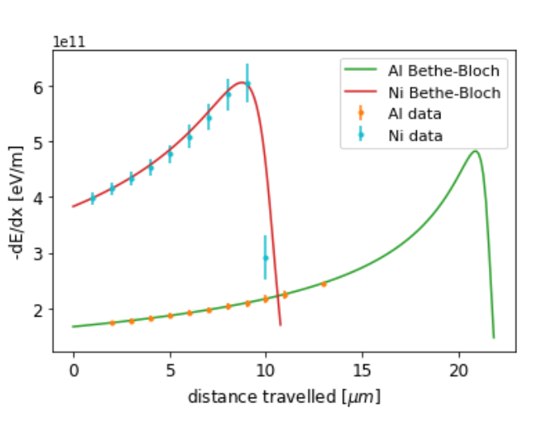
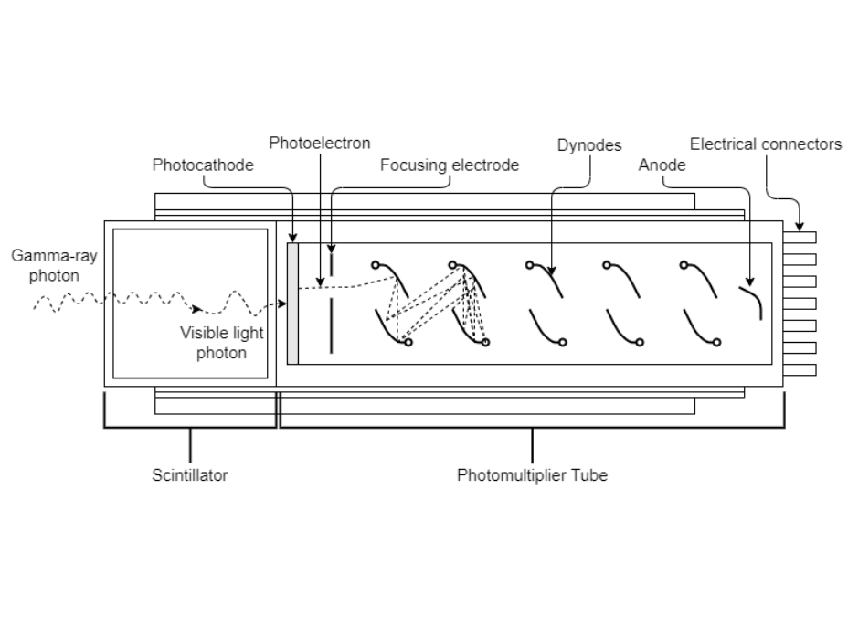

Laboratory Reports
|  | Energy Loss of Alpha ParticlesDecember 2021A Si semiconductor detector was used to measure the energy loss of alpha particles transmitted through varying thicknesses of different materials. From this data, the average ionisation energies of each material were calculated to be (323 ± 17) eV for nickel, (124 ± 5) eV for aluminium, (226 ± 13) eV for argon gas, (113 ± 9) eV for nitrogen gas, and (47 ± 6) eV for helium gas. The values for nickel, argon, and helium were consistent with the accepted values for the average ionisation energies, whereas the values for aluminium and nitrogen were not. Click to request copy of lab report. |
 |
Finding the Z boson Production Cross Section with the ATLAS ExperimentNovember 2021Through the framework ‘ROOT’, Monte Carlo simulations were used to isolate Z boson events in data collected from proton-proton collisions at √s = 13TeV in the ATLAS experiment. Two values were calculated for the production cross section of the Z boson, from decay its into an electron positron pair σ(pp → Z → ee) =[1.957 ± 0.009(stat) ± 0.009(syst) ± 0.033(lumi)]nb, and from its decay into a positive and a negative muon σ(pp → Z → µµ) =[1.877 ± 0.008(stat) ± 0.004(syst) ± 0.032(lumi)]nb. These two values were not consistent with each other, but they were both consistent with a value for the Z boson cross section calculated by the ATLAS Collaboration. Click to request copy of lab report. |
|  | Properties of Gamma RadiationMarch 2021A Thallium activated Sodium Iodide (NaI(Tl)) scintillation detector was used to measure the activity and of a 22Na source and the attenuation coefficients of Aluminium, Lead, and Steel. The activity was measured to be (194 ± 9) kBq. At γ-ray energy 511 keV the attenuation of Aluminium was (0.0978 ± 0.0010) cm2/g, the attenuation of Steel was (0.0971 ± 0.0014) cm2/g, and the attenuation of Lead was (0.1394 ± 0.0012) cm2/g. At γ-ray energy 1275 keV the attenuation of Aluminium was (0.0680 ± 0.0042) cm2/g, the attenuation of Steel was (0.0649 ± 0.0028) cm2/g, and the attenuation of Lead was (0.0614 ± 0.0011) cm2/g. Click to request copy of lab report. |